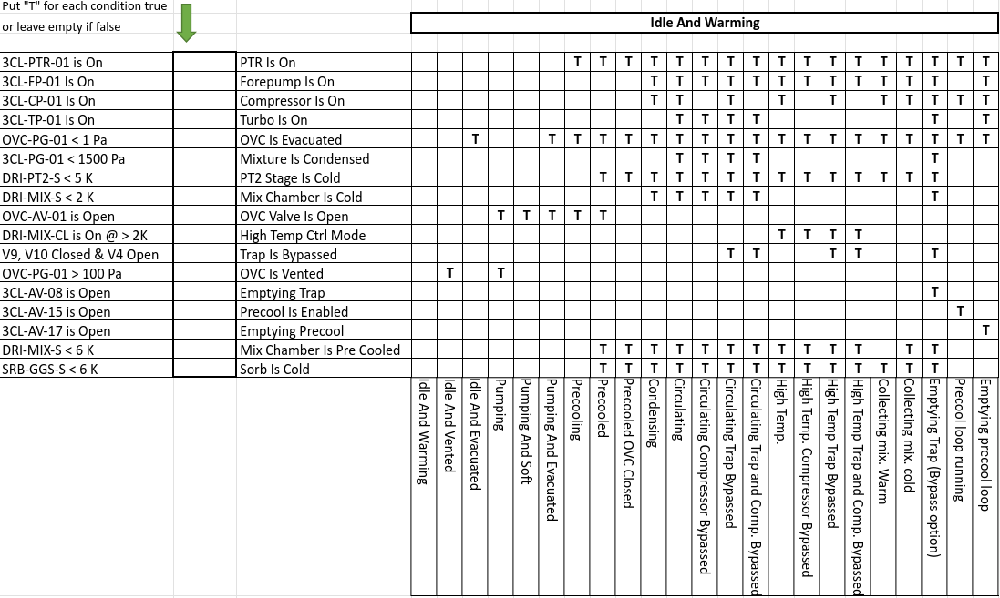

Proteox controller#
High-level controller for the Proteox cryostat system by Oxford Instruments, interfacing via WAMP.
To configure the connection, you must include a .env file in the same folder as the Proteox module. This file must contain the following entries:
WAMP_USER="**********"
WAMP_USER_SECRET="*************"
WAMP_REALM="ucss"
WAMP_ROUTER_URL="ws://************:8080/ws"
BIND_SERVER_TO_INTERFACE="localhost"
SERVER_PORT="33576"
Warning
All API methods (including sensor accessors and recognized-state helpers) are asynchronous and must be used with await inside an async function.
Example of operations#
from asyncio import run
from qtics import Proteox
async def myfun():
instrument = Proteox()
await instrument.connect()
mix = await instrument.get_MC_T()
pt1 = await instrument.get_PT1_T1()
pt2 = await instrument.get_PT2_T1()
sti = await instrument.get_STILL_T()
col = await instrument.get_CP_T()
print("\nTEMPS:")
print(f"MIX: {mix*1000:.2f} mK")
print(f"STILL: {sti*1000:.2f} mK")
print(f"COLD: {col*1000:.2f} mK")
print(f"PT1: {pt1:.2f} K")
print(f"PT2: {pt2:.2f} K")
await instrument.close()
run(myfun())
Commands#
connect()
Connect to the Proteox cryostat via WAMP.
close()
Cleanly disconnect from the cryostat session.
is_in_remote()
Check if instrument is connected or the system is in remote, refusing connection.
get_<sensor>()
Dynamic getter for supported sensors (see below). If the key is not recognized, raises an
AttributeError.set_<attribute>(<value>)
Dynamic setter for supported control parameters (see below). If the key is not recognized, raises an
AttributeError.is_in_recognized_state()
Return
Trueif the current cryostat conditions match one of the recognized exclusive states.get_recognized_states()
Return a list of recognized states currently matched. In normal operation this should usually contain zero or one state, because matching is implemented as exclusive.
how_to_go_to_recognized_state(target_state=None)
Return a human-readable suggestion describing what conditions are missing or conflicting in order to reach:
the closest recognized state, if
target_stateisNonea specific recognized state, if
target_stateis provided
Dynamic getters#
The following sensors are available via dynamic getter methods:
Temperatures#
get_SAMPLE_T()– Sample thermometerget_MC_T()– Mixing chamber temperatureget_MC_T_SP()– Mixing chamber temperature setpointget_STILL_T()– Still temperatureget_CP_T()– Cold plate temperatureget_SRB_T()– Sorb temperatureget_DR2_T(),get_DR1_T()– DR stage temperaturesget_PT2_T1(),get_PT1_T1()– Pulse tube stage temperaturesget_MAG_T()– Magnet system temperature
Heaters and Powers#
get_MC_H()– Mixing chamber heater powerget_STILL_H()– Still heater power
Pressures#
get_OVC_P()– Outer vacuum chamber pressureget_P1_P()toget_P6_P()– Various pressure gauges
Flows#
get_3He_F()– 3 He flowmeter
Magnetic Field Control#
get_MAG_VEC()– Magnetic field vectorget_MAG_STATE(),get_SWZ_STATE()– Magnet controller and sweep stateget_MAG_TARGET()– Field targetget_MAG_X_STATE(),get_MAG_Y_STATE(),get_MAG_Z_STATE()– Axis stateget_MAG_CURR_VEC(),get_CURR_TARGET()– Magnet current vector and targets
Cryostat State#
get_state()– Cryostat state (returns descriptive label, e.g."CONDENSING")
Available state labels:
IDLEPUMPINGCONDENSINGCIRCULATINGWARM UPCLEAN COLD TRAPSAMPLE EXCHANGE
Dynamic setters#
The following control parameters are available via dynamic setter methods. Each setter corresponds to a WAMP procedure call and must be awaited.
Example#
# Change the mixing chamber setpoint and heater power
await instrument.set_MC_T(0.1) # set MC temperature setpoint to 100 mK
Note
Temperature values are expected in kelvin.
Temperature and Heater Control#
set_MC_T(value)– Set mixing chamber temperature setpointset_MC_H(value)– Set mixing chamber heater powerset_MC_H_OFF(value=0)– Turn off mixing chamber heaterset_STILL_H(value)– Set still heater powerset_STILL_H_OFF(value=0)– Turn off still heater
Magnet Control#
set_MAG_TARGET(value)– Set magnetic field target (vector or scalar depending on mode)set_MAG_STATE(value)– Set magnet controller stateset_MAG_X_STATE(value),set_MAG_Y_STATE(value),set_MAG_Z_STATE(value)– Set state for each magnet axis
Note
Setter operations must always be awaited.
Example: await instrument.set_MAG_STATE("SWEEP")
Recognized states#
The Proteox driver also provides a recognized-state evaluator.
This system compares a set of measured cryostat conditions (pressures, temperatures, valve states, pumps, etc.) against an internal exclusive truth table of known operational states.
This is useful to:
check whether the cryostat is currently in a valid known configuration
identify the current recognized operating state
determine the closest valid state
obtain a list of suggested actions to reach a target state
Recognized state table#
The state recognition logic is based on the following operational truth table:
{kind=link}

Note
Matching is exclusive.
This means that a state is considered matched only if:
all conditions expected to be True are actually True
all conditions expected to be False are actually False
In other words, extra active conditions can invalidate a state match.
Available high-level methods#
You can access the recognized-state API directly from the Proteox object.
Check whether the current state is recognized
ok = await instrument.is_in_recognized_state()
print(ok)
Example output:
True
Get the currently recognized state(s)
states = await instrument.get_recognized_states()
print(states)
Example output:
['Circulating Compressor Bypassed']
Get instructions to reach the closest recognized state
suggestion = await instrument.how_to_go_to_recognized_state()
print(suggestion)
Example output:
Closest target state: 'Circulating'
Total mismatches: 1
Required actions:
- 3CL-CP-01 is On -> Turn ON compressor (3CL-CP-01).
Get instructions to reach a specific recognized state
suggestion = await instrument.how_to_go_to_recognized_state("Circulating")
print(suggestion)
Example output:
Target state: 'Circulating'
Total mismatches: 1
Required actions:
- 3CL-CP-01 is On -> Turn ON compressor (3CL-CP-01).
Full example#
from asyncio import run
from qtics import Proteox
async def myfun():
instrument = Proteox()
await instrument.connect()
ok = await instrument.is_in_recognized_state()
print("Recognized:", ok)
states = await instrument.get_recognized_states()
print("Matched states:", states)
suggestion = await instrument.how_to_go_to_recognized_state()
print("\nClosest-state suggestion:")
print(suggestion)
suggestion_specific = await instrument.how_to_go_to_recognized_state("Circulating")
print("\nHow to reach 'Circulating':")
print(suggestion_specific)
await instrument.close()
run(myfun())
Internal recognized-state manager#
The Proteox object internally exposes a recognized-state manager:
instrument.recognized_states
This helper is mainly useful for advanced debugging, diagnostics, or future GUI integration.
It currently supports internal methods such as:
evaluate_conditions()get_condition_report()match_all_states()get_closest_state()get_state_gap(target_state)get_transition_plan(target_state=None)
These methods are generally intended for advanced users and internal tooling rather than routine control scripts.
Typical usage pattern#
A practical workflow is:
read the current cryostat status
check whether it is recognized
if not, ask for the nearest valid state
optionally request how to reach a specific target state
Example:
ok = await instrument.is_in_recognized_state()
if not ok:
print(await instrument.how_to_go_to_recognized_state())
This is especially useful when building:
monitoring dashboards
operator guidance tools
automated safety or recovery procedures
state-aware experiment orchestration